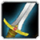

Nombre de points actuels : 51
Nombre de points dépensés : 0
Guerrier
IMPROVED HEROIC STRIKE
Réduit le coût en rage de votre technique Frappe héroïque de 1/2/3 points.
DEFLECTION
Augmente de 1/2/3/4/5% vos chances de Parer.
IMPROVED REND
Augmente de 15/25/35% les points de dégâts infligés par la technique Pourfendre.

IMPROVED CHARGE
Requiert 5 points en Armes
Augmente la quantité de Rage générée par votre technique Charge de 3/6.
TACTICAL MASTERY
Requiert 5 points en Armes
Vous conservez jusqu'à 5/10/15/20/25 de vos points de rage lorsque vous changez de posture.
IMPROVED THUNDER CLAP
Requiert 5 points en Armes
Réduit le coût de votre technique Coup de tonnerre de 1/2/4points de rage.
IMPROVED OVERPOWER
Requiert 10 points en Armes
Augmente de 25/50% vos chances d'infliger un coup critique avec la technique Fulgurance.
ANGER MANAGEMENT
Requiert 10 points en Armes
Requiert 5 points en Tactical Mastery
Augmente de 30% le temps nécessaire au processus de déperdition des points de rage lorsque vous cessez le combat.
DEEP WOUNDS
Requiert 10 points en Armes
Requiert 3 points en Improved Rend
Vos coups critiques font saigner l'adversaire et lui infligent 20/40/60% des points de dégâts moyens de votre arme en 12sec.
TWO-HANDED WEAPON SPECIALIZATION
Requiert 15 points en Armes
Augmente de 1/2/3/4/5% les points de dégâts que vous infligez avec les armes à deux mains.
IMPALE
Requiert 15 points en Armes
Requiert 3 points en Deep Wounds
Augmente de 10/20% les points de dégâts supplémentaires infligés par vos coups critiques, lorsque vous utilisez vos techniques en postures de combat, défensive et berserker.
AXE SPECIALIZATION
Requiert 20 points en Armes
Augmente de 1/2/3/4/5% vos chances d'infliger un coup critique avec les haches.
SWEEPING STRIKES
Requiert 20 points en Armes
Vos 5 prochaines attaques de mêlée touchent un adversaire proche supplémentaire.
MACE SPECIALIZATION
Requiert 20 points en Armes
Vous confère 1/2/3/4/6% de chances d'étourdir votre cible pendant 3 sec avec une Masse.
SWORD SPECIALIZATION
Requiert 20 points en Armes
Vous confère 1/2/3/4/5% de chances de bénéficier d"une attaque supplémentaire sur la même cible, après avoir infligé des dégâts avec votre épée.
POLEARM SPECIALIZATION
Requiert 25 points en Armes
Augmente de 1/2/3/4/5% vos chances d'infliger un coup critique avec les armes d'hast.
IMPROVED HAMSTRING
Requiert 25 points en Armes
Confère à votre technique Brise-genou 5/10/15% de chances d'immobiliser votre cible pendant 5 sec.
MORTAL STRIKE
Requiert 30 points en Armes
Requiert 1 point en Sweeping Strikes
Une attaque vicieuse qui inflige les points de dégâts de l'arme plus 85 et blesse la cible. L'effet des sorts de soins dont elle est la cible est réduit de 50% pendant 10 sec.